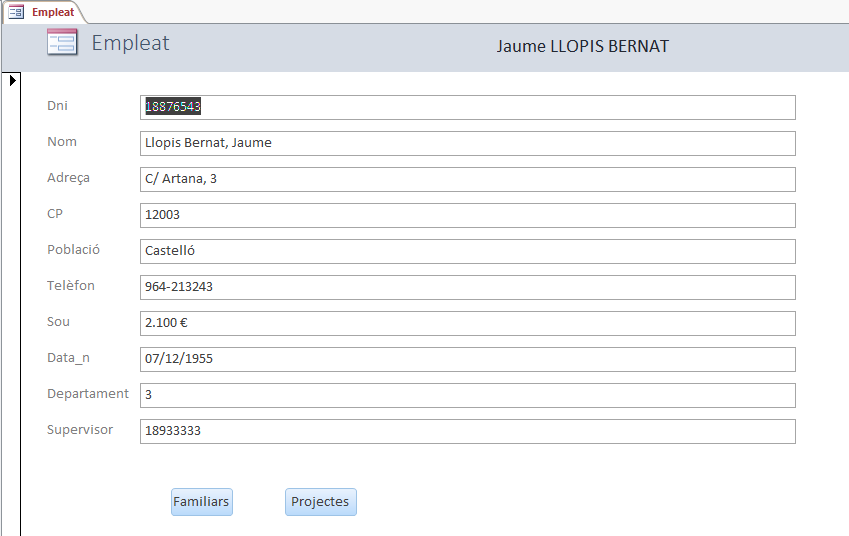

3.7 Funcions estàndard
A continuació veurem algunes de les funcions que ens proporciona VBA agrupades per categories
FUNCIONS MATEMÀTIQUES
|
Abs(n): valor absolut de n |
Cos(r): cosinus |
| Exp(n): el número e elevat a una potència | Hex(n): Converteix a hexadecimal |
| Int(r): part entera de r | Log(r): logaritme en base e de r |
| Oct(n): converteix a octal | Randomize(n): inicialitza el generador de números aleatoris |
| Rnd(): número aleatori entre 0 i 1 | Sin(r): sinus |
| Tan(n): tangent |
FUNCIONS DE CONVERSIÓ
| Convertir a un determinat tipus | CBool, CByte, CCur, CDate, CDbl, Cdec, CInt, CLng, CSng, CStr, CVar, CVErr |
FUNCIONS DE TRACTAMENT DE CADENA
(Nota: Hi ha moltes funcions que poden o no dur un $ al final: la versió que no en porta torna un valor Variant, mentre que la que sí que en duu torna un String)
| Asc(text) | Codi ASCII del primer caràcter |
| Chr(n) | Torna el caràcter corresponent al codi ASCII n |
| Format(text,format) | Torna el valor amb el format indicat |
| InStr(i,cadena,subcadena) | Torna la posició en la qual es troba la subcadena dins de la cadena (si no la troba, 0), començant des de la posició i |
| Lcase(text) | Passa a minúscules |
| Left(text,n) | Torna n caràcters del costat esquerre |
| Len(text) | Llargària de la cadena |
| Ltrim(text) | Elimina els espais en blanc de l'esquerra |
| Mid(text,i,n) | Torna n caràcters, començant des de la posició i. Si no s'especifica n és fins el final de la cadena |
| Right(text,n) | Torna n caràcters del costat dret |
| Rtrim(text) | Elimina els espais en blanc de la dreta |
| Space(n) | Torna una cadena amb el número de espais en blanc especificat |
| Str(n) | Converteix un número en una cadena |
| StrComp(text1,text2) | Compara dues cadenes (els caràcters ASCII). Es pot fer que distingisca majúscules i minúscules, o que no ho faça |
| String(n,c) | Torna una cadena amb el caràcter c repetit n vegades |
| Trim(text) | Elimina els espais en blanc dels dos costats |
| Ucase(text) | Passa a majúscules |
| Val(text) | Converteix una cadena en un número |
FUNCIONS DE DATA I HORA
| Now: dia i hora del sistema | Date: dia del sistema |
| Time: hora del sistema | |
| Day: trau el dia d'una data | Month: trau el mes d'una data |
|
Weekday: trau
el dia de la setmana (diumenge 1, dilluns 2, ...) |
Year: trau l'any d'una data |
| Hour: trau l'hora | Minute: trau els minuts |
| Second: trau els segons | |
| DateDiff: diferència entre dues dates (en el format especificat: dies, mesos, ...) | DateAdd: suma a una data un número determinat de espais temporals (dies, ...) |
FUNCIONS D'AGREGAT
Totes aquestes funcions treballen sobre un conjunt de valors, de files tretes d'alguna taula. Sempre tindran 3 arguments:
- Expresión: indica el camp que es busca, sobre el qual es vol fer alguna cosa.
- Dominio: indica la nom de la taula o consulta d'on es trauen les dades.
- Criterio: indica una possible selecció de les files de la taula.
| DAvg: calcula la mitjana | DCount: compta quantes files |
| DLookup: torna el valor del camp de la primera fila que satisfa el criteri | DFirst: torna el primer valor del camp especificat |
| DLast: torna l'últim | DMin: valor mínim |
| DMax: valor màxim | DStDev: desviació típica |
| DSum: suma | DVar: variància |
Nota: Aquestes funcions les veurem bé en el tema de SQL.
ALTRES FUNCIONS
| InputBox |
Quadre de entrada. Torna un String. El format de la funció és:
InputBox(missatge[, títol][, valor per defecte][, xpos][, ypos][, helpfile, context]) |
| MsgBox |
Finestra de missatge. Es poden especificar els botons que
apareixeran i la funció torna un valor que equival al botó apretat
MsgBox(missatge[, botons][, títol][, helpfile, context]) |
Exercici 3.14 (voluntari)
Per mig de les funcions de cadena intentar traure, en una etiqueta nova en el formulari Empleat, els noms dels empleats canviant l'ordre (nom + cognoms). Feu-lo progressivament així:
- Primer l'intenteu traure amb el mateix format que està, és a dir Cognoms, Nom
- Després intenteu-lo amb el format de la figura: nom i cognoms. Es tractarà de trobar la coma (amb InStr() )
- Traure primer el que hi ha darrere de la coma (pot anar molt bé la funció Mid, ja que pot traure fins el final de la cadena).
- Després el que hi ha davant, i segurament la funció més còmoda serà Left().
- Per complicar-lo un poc més, podríem traure els cognoms en majúscules.
La propietat de l'etiqueta que s'ha de modificar és Caption. Haureu de mirar el nom que us dóna per a l'etiqueta, que pot canviar d'uns a una altres.
Aquest seria l'aspecte:

El moment oportú podria ser "Al activar registro". Com que alguns de vosaltres tindreu una macro per aquest event (realitzada en l'exercici 2.20, que era voluntari), podeu substituir-la pel procediment (que pot esat associat al formulari), i dins d'aquest cridar la macro amb:
DoCmd.RunMacro "nom_de_la_macro"
Així es es faran les dues feines, la de l'exercici 2.20 i la d'aquest exercici.
Llicenciat sota la Llicència Creative Commons Reconeixement NoComercial SenseObraDerivada 2.5